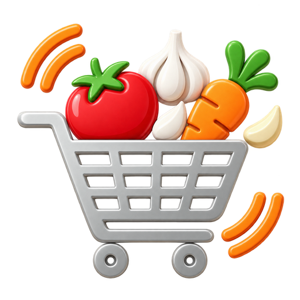
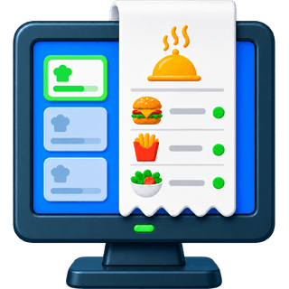

Compras e cotações
Organize listas, fornecedores e marcas. Compare preços considerando o conteúdo de cada unidade ou embalagem.
Conhecer as cotaçõesPara o dia a dia do restaurante
Das compras às tarefas da equipe, reúna o que faz a sua operação acontecer no Alô Cozinha.
Aplicativo Android Web em preparação
Cada parte da rotina, no seu lugar.

ComprasProdutos e fornecedores TarefasEquipe e procedimentos EtiquetasIdentificação e validade
PedidosAcompanhamento no KDSConheça as áreas do aplicativo
Uma rotina mais clara
Ferramentas que acompanham o trabalho real da sua cozinha.
Organize listas, fornecedores e marcas. Compare preços considerando o conteúdo de cada unidade ou embalagem.
Conhecer as cotaçõesDefina responsáveis, horários e procedimentos. Acompanhe a execução e consulte o histórico das tarefas da equipe.
O que fazer, quando e por quem.Mantenha receitas e modos de preparo organizados. Vincule fichas às tarefas e deixe as orientações à mão.
Referência para o preparo.Prepare etiquetas com identificação, manipulação, conservação e validade, com modelos e tamanhos ajustáveis.
Do preparo ao armazenamento.Acompanhe os pedidos e suas etapas no painel da cozinha, mantendo a equipe orientada durante o serviço.
Visibilidade para a produção.Reúna a documentação do restaurante, consulte anexos e acompanhe os vencimentos em um só lugar.
Informação fácil de encontrar.Cotação com fornecedores
Envie uma solicitação por link e reúna as propostas para decidir sua compra.
Cada fornecedor recebe seu próprio link para informar disponibilidade, marca, embalagem e preço.
Confira os preços por kg, litro ou unidade, junto às marcas e quantidades ofertadas.
Você escolhe os itens e os fornecedores. O pedido depende da sua decisão.
Quando ativado, os fornecedores que já ofertaram podem ver o menor preço dos seus itens e revisar a proposta até o prazo, sem ver os nomes dos concorrentes.
Vamos conversar
Entre em contato para informações sobre o aplicativo, disponibilidade e suporte.